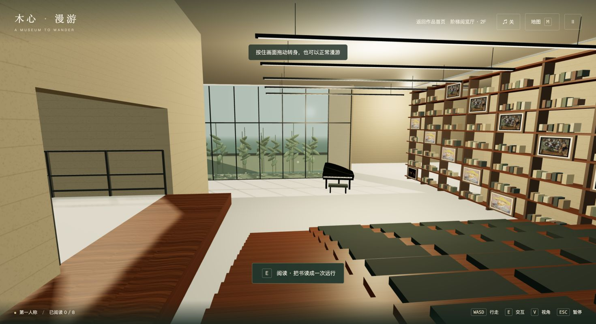
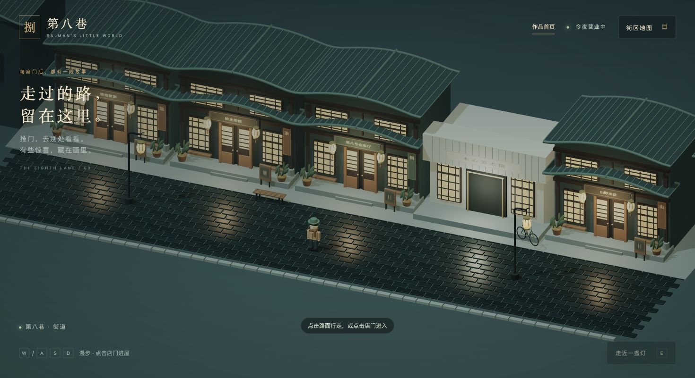
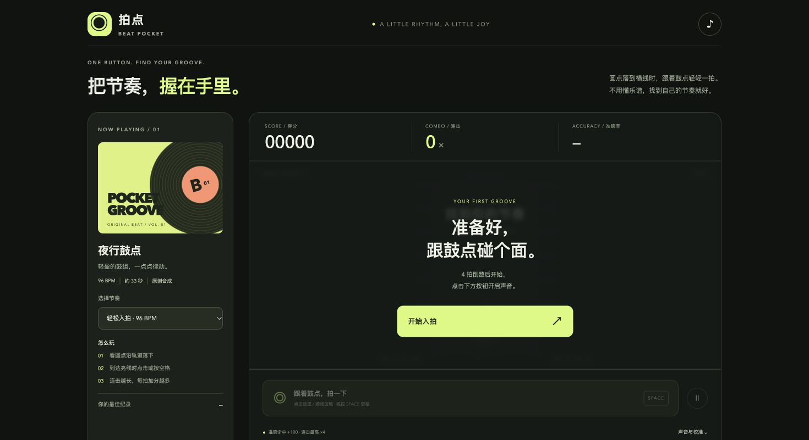

想玩一局，
还是逛一会儿？
这里放着我做的游戏、三维空间和日常小工具。
选一个喜欢的，直接进去。
随心选一个
每个入口，都是一段不同的体验。
 探索游戏
探索游戏潮汐之间
Moment & Forever
从童年花园走向海岸与山丘。在回忆里散步，留下此刻想留下的东西。
约 8–12 分钟 · 电脑 / 手机
数字漫游木心美术馆
在书墙与水光之间
走过水桥，踏上木阶，看看展览和书墙。给自己留一段慢慢走的时间。
自由探索 · 以木心美术馆为灵感的数字再创作
三维街景第八巷
灯火亮着，随意走走
沿着夜色里的小街散步，推开茶馆和会客厅的门，看看街角藏着什么。
点击行走 · 电脑 / 手机
节奏游戏拍点
Beat Pocket
圆点落到亮线时，跟着鼓点拍一下。连续命中，看看自己能连上多少拍。
约半分钟一局 · 点击 / 触屏 / 空格